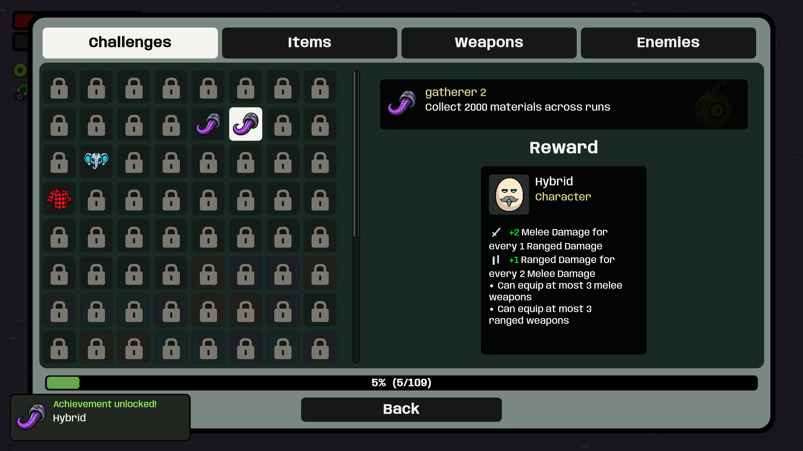
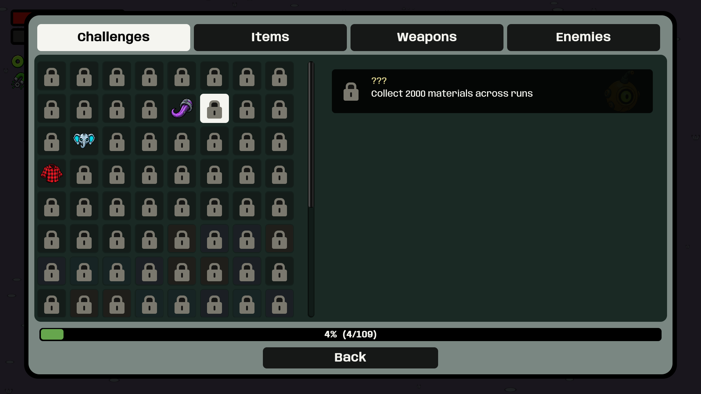
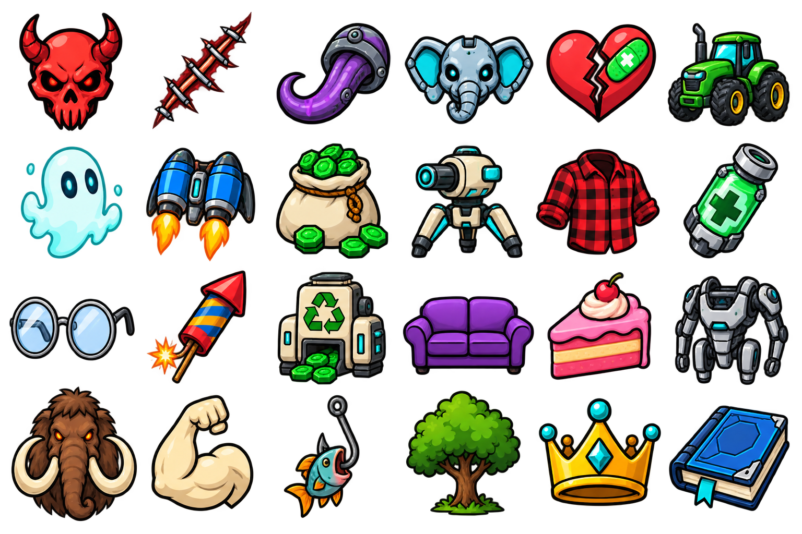
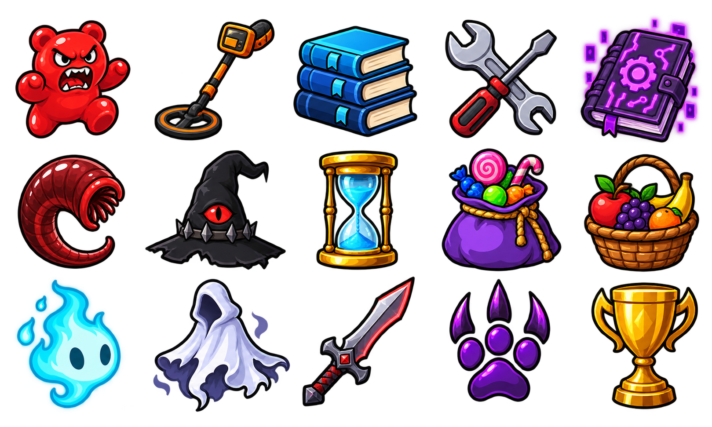

38 new themed symbols, matching companion icons, and character portraits for character-win achievements. Series share a symbol as in the reference. Reward art remains separate.




The last trophy is unused. Play updated build